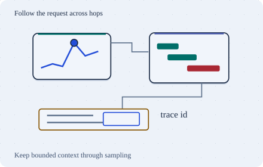

Go deeper · 7 minutes
Logs and traces
Keep enough evidence to explain failures without indexing or retaining everything.
Open this lesson
An error chart rises, but why?
Checkout errors climb at 09:00. A metric identifies the service and time range. A linked trace shows a slow inventory call, and logs for that trace explain a timeout. Metrics summarize, traces connect causally related spans, and logs preserve detailed events. Collecting all three without useful links only creates three separate search problems.
Index a little or index the words
Search the same log rows using a label-only index or word postings. Index bytes and rows examined are measured from this data.
Worked example: sampling trade-offs
The same 100 completed traces feed both samplers. Head decisions cannot know the outcome; tail decisions wait and pay to buffer the whole stream.
Retain by value
Route related spans to one tail decision group, bound its memory and define a late-span policy. Propagate context across queues and use asynchronous links when parent-child nesting misleads. An exemplar links a metric to a selected trace without making trace_id a label. Complex tail sampling may lack usable unbiased weights. A configured baseline percentage cannot automatically correct sampled counts.
Preserve the denominator
- Count every eligible request: User SLIs come from complete request counters.
- Select detailed traces: Head sampling decides early; tail sampling waits for outcomes and needs bounded buffers.
- Retain by evidence value: Keep rare failures and security events under explicit policy. Sampling may bias counts.
Key numbers
- Raw spans
- ≈ 100 MB/s. 10,000 × 20 × 500 B
- Ten percent head sample
- ≈ 0.864 TB/day. 100 MB/s × 86,400 × 0.1
- Illustrative tail buffer
- ≈ 3 GB. 100 MB/s × assumed 30 s average residence, before overhead and copies
Check your reasoning
Think through these questions before opening the lesson. In the game you can test the idea and compare your reasoning.
- A trace fails at its last span. A consistent uniform 10% head sampler is independent of outcome. What can it promise?
- Why not index every log word? Follow-up: support needs broad searches once a week.
- Most log searches specify a service and narrow time range. Which design avoids a continuous full-text indexing bill?
- Tail sampling keeps all errors. What could still be missing? Follow-up: the collector restarts halfway through a trace.
- Tail sampling keeps errors preferentially, and inclusion probabilities are unknown. What should supply the error-rate SLI?
The key point
Choose the index and sampling policy from the questions people need to answer.
Practise this idea
- Hard
Metrics platform
Thousands of services send a stream of measurements: CPU, errors, latency. You store them, draw the dashboards and fire the alerts. The platform watching everyone else must never go down first, and one customer creating millions of new series can ruin the bill.
- Hard
Logs platform
Build a shared log service for 2,000 teams. Collectors send compressed chunks, and on-call engineers find logs by tenant, service and time before filtering their words. A wide search or a runaway label must not stop other teams from investigating an outage.
- Hard
Tracing platform
Store distributed traces for 500 teams and make an exemplar link open the useful trace during an incident. Decide what to sample before storage, handle late spans, and keep query traffic from overwhelming ingestion. Keeping all errors is a policy goal with a failure boundary, not a magic property of sampling.